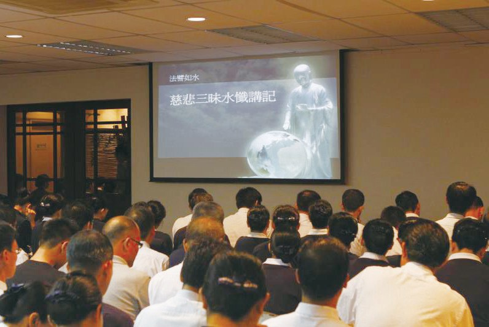
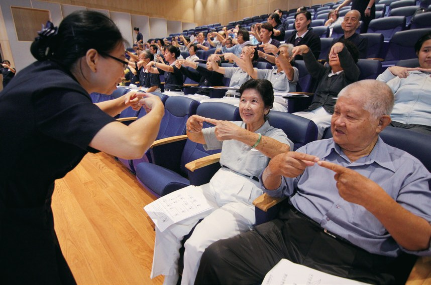
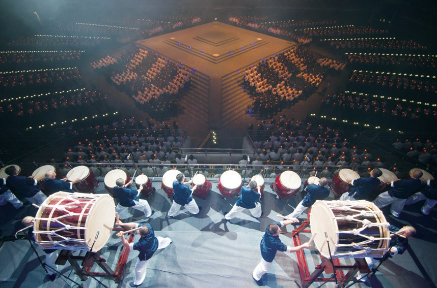
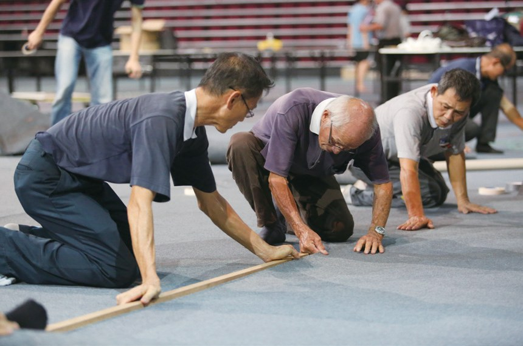
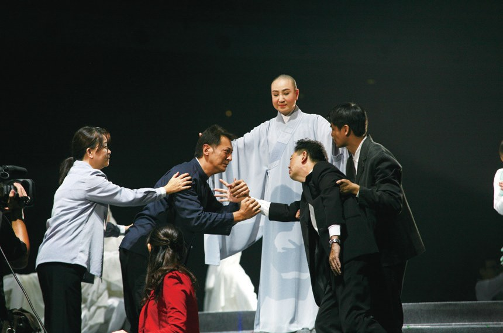
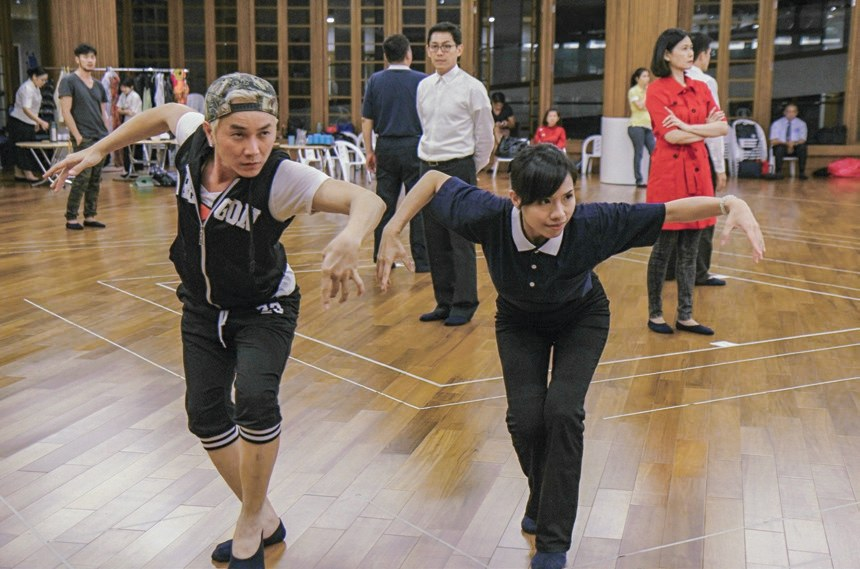
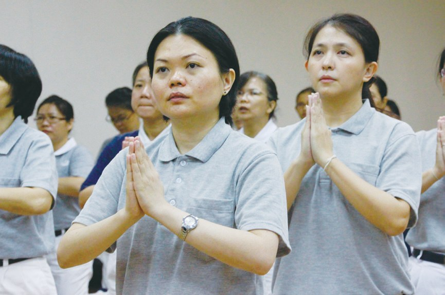
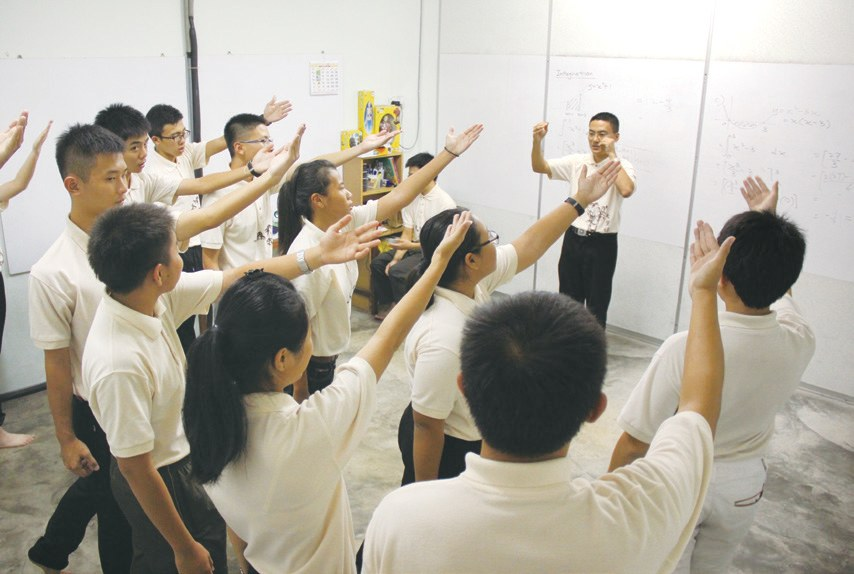
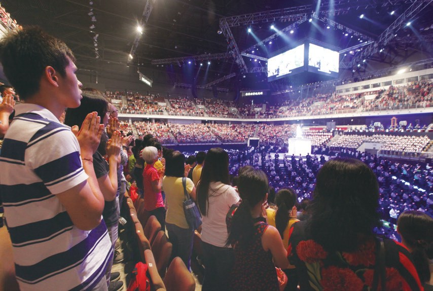
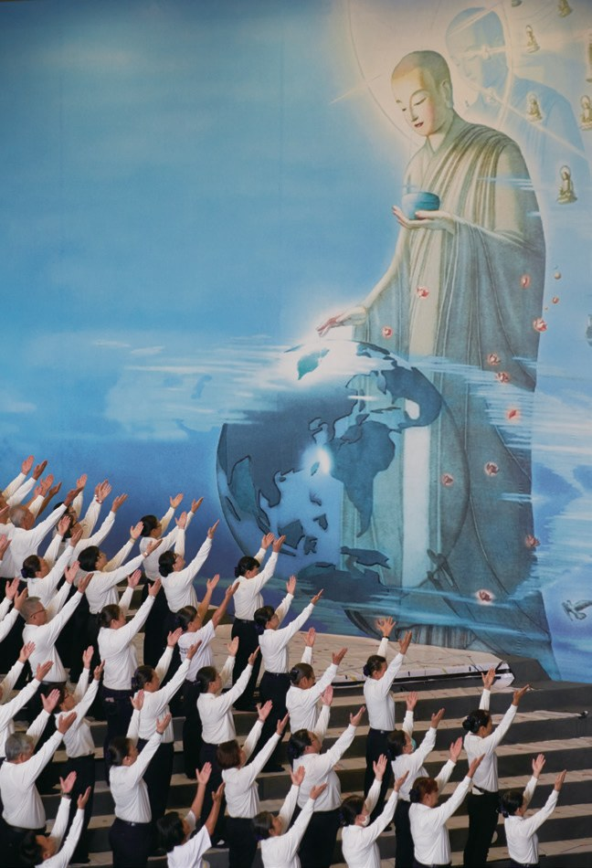

懺悔法門
安定人心
上臺演出，為什麼說「不是表演」？

先別急著下結論，讀完再說說你的想法～
這一篇講《法譬如水》經藏演繹：2015年，兩千多位志工在吉隆坡用手語、歌聲和鼓聲，把懺悔的經文演出來。
你會讀到把大腿當鼓的老闆、突然請辭的舞蹈老師，還有在懺文裡看見自己的學生。
下面是原書的節錄，紅色底線是我們替你標出的轉折點。
讀之前：你覺得一場經藏演繹，最難的是什麼？
用耳朵看、用眼睛聽
1999年，慈濟第一次經藏演繹。閱讀引導
1999年慈濟三十四周年慶，手語隊以《三十七道品》偈頌歌曲推出音樂手語劇，是慈濟首次的經藏演繹。
「靜思手語隊用美麗的肢體語言詮釋，大家要記得用耳朵看、用眼睛聽、用心靈記，虔誠精進。」
上人叮嚀・p.593
用眼睛聽？
2011年時逢慈濟四十五周年，上人期盼人人發露懺悔，藉此重啟懺悔法門……
同年5月20日於花蓮靜思堂舉辦《法譬如水》經藏演繹，雪隆分會志工林佳樺觀賞後，內心深受感動……
「上人，我們海外還有很多的弟子也會陪著您攀爬須彌山，您並不孤獨。」
林佳樺默默發願・p.594
一起爬山。

「可以先辦讀書會，從瞭解《法譬如水》懺文開始。入經藏有別於平時的辦活動，必須更尊重、慎重、敬重！……」
上人慈示・p.594演繹地點選在武吉加里爾室內體育館舉辦，是除了臺灣以外，首次在馬來西亞以四面舞臺的方式呈現。

社區讀書會於2014年8月28日正式啟動，每一場平均都有逾一千六百多人參與。
把大腿當鼓
鼓手隊員，都是忙碌的大老闆。閱讀引導
2014年11月，雪隆分會成立「心鼓隊」……
他們雖然都是忙於事業的大老闆，但是為了演繹，隨身都帶著鼓棒，有空的時間就練習手感；晚上也不應酬了，大家聚在一起練習……

改去練鼓！

心鼓隊召集人林孝式見狀，認為大家要集中練習，「合心」一同發揮力量，於是號召成員們每日早晨薰法香後一起練習。
不僅在桌子上練，也把握時間把大腿當鼓，打到大腿都紅了。

練得好用心！
猜一猜閱讀引導
舞臺從兩面改成四面，每場所需的演出人數提高到多少人？

大批志工與外包廠商人員抓緊時間，與時間賽跑，除了安裝、測試舞臺，還要接力鋪設地毯、地標、佈置佛臺等，總算在四天內完成艱鉅的籌備任務……
上臺不是表演
公演前三個月，舞蹈老師突然請辭。閱讀引導

……但在公演前三個月，原先參演的舞蹈老師卻突然請辭。
老師卻走了……
策劃團隊遂跟臺灣經藏演繹團隊討論，大膽嘗試用志工團隊演出，但志工大多不是專業背景，只能反覆觀看臺灣志工的演繹影片，多次練習熟記動作。

「上臺不是表演，而是用肢體傳法。」
志工蔣親賢說・p.602是傳法！
由於志工來自不同地方，最近的需要兩小時車程，而最遠的甚至需要六小時才能抵達，他們舟車勞頓，都是為了能夠聚在一起練習。
只為一起練習！
懺文裡的自己
一位抱病的志工，一位補習班老師。閱讀引導
2014年7月，楊翠麗在慈濟志工的邀約下，答應參加《法譬如水》經藏演繹，但在那之後無常卻悄然來到。同年9月，楊翠麗就醫時被診斷為晚期皮膚癌。

「我感受到上人所說的『來不及』，無論多辛苦，也要圓滿成為上人的第一代弟子，幫上人承擔如來家業。」
楊翠麗說・p.605……但她慶幸自己因心中有法，瞭解因緣果報，讓她安然度過三十三次的電療，而且堅持吃素，不殺生。在10月31日，她如願回到花蓮靜思精舍圓滿受證……
……但她的心積極樂觀，精進求法，讓她在生命的最後更加輕安自在。
心還是很安定。
「除了知識與關愛以外，還有什麼能夠傳承給學生，令他們終身受用。」
黃勇証總在思考・p.605在慈濟志工的邀約下，黃勇証參與《法譬如水》經藏演繹讀書會，並興起了帶領學生參與的念頭。他在補習班號召後，共有十五名學生跟著入經藏。

這群學生漸漸改變了與人相處的方式，也更有效率地安排時間，完成課業，課餘時間也努力練習手語，兩者都不落人後。
「……當比著『願不說人非不惡口，口吐蓮花聲細柔』手語時，就像是時刻在提醒自己不要再重犯之前的過錯。」
學生王銘炎分享・p.607
就提醒自己一次。
「在帶動的過程中，我也向內反省自己的脾氣，師生一起互相成長，大家都有了意想不到的改變。」
黃勇証深感欣慰・p.607有心就不難
兩場演繹，萬眾一心。閱讀引導
- 四千六百多位志工與會眾參加p.600
- 95位海內外法師與會p.607
「……兩千多人入經藏演繹是很不簡單的一件事，集合大家的唱誦，展現出來那股弘法的力量，連石頭也會穿透，很讚歎這樣的一場大法會。」
常超法師表示・p.607
「……所以說天下沒有做不到的事，愛是無限量的；就如佛在我們的心中，每一個人都有清淨的本性，這就是最祥和的社會！」
上人說・p.608停一停：誰讓你記住了？閱讀引導
選一位你印象最深的人。沒有標準答案。
有人陪上人爬須彌山，有人坐六小時車去練習，有人抱病圓滿受證，有學生在懺文裡看見自己。哪一位讓你最有感覺？

一起回頭看看吧～
回望
依本章原文整理，每一條都標了原書頁碼。閱讀引導
背後原因
為什麼要入經藏

小川演一場戲就好，為什麼要讀書會、齋戒、背懺文？
- 先讀懂
上人慈示先辦讀書會，瞭解懺文。p.594

不是表演上臺是用肢體傳法。p.602
- 改習氣
學生改變了與人相處的方式。p.606
後續發展
經藏演繹一路走來

小禾從第一次經藏演繹到大馬萬人入經藏，經過了多少年？
- 1999
慈濟首次經藏演繹。p.593
- 2011
雪隆啟動《法譬如水》讀書會。p.595
- 2014.8
南馬各據點聯合籌備。p.595
- 2014.11
成立「心鼓隊」。p.597
- 2015.6.5
臺灣團隊到吉隆坡指導。p.602
- 2015.7.4
首場經藏演繹正式演出。p.599
入經藏前後
以前和後來
小川入經藏之後，大家有什麼不同？
- 鼓譜背不起來鼓譜都背熟了p.601
- 晚上去應酬聚在一起練鼓p.597
- 用尖酸的言語攻擊別人提醒自己不要再犯p.606–607
- 迷信不探病以同理心關懷個案p.604–605
以上只整理本章寫到的事；書裡沒寫到的，我們不替它下結論。
回頭看讀前的選擇閱讀引導
心鼓隊練到大腿都紅了才背熟鼓譜（p.601）；南馬志工最遠要六小時車程才能一起練習（p.603）；學生從懺文中看見自己的習氣（p.606–607）。練鼓、趕路、改習氣，每一樣都要下功夫。
那臺下的人看見了什麼？
只有你自己看得到喔！
準備好了就一起出發～